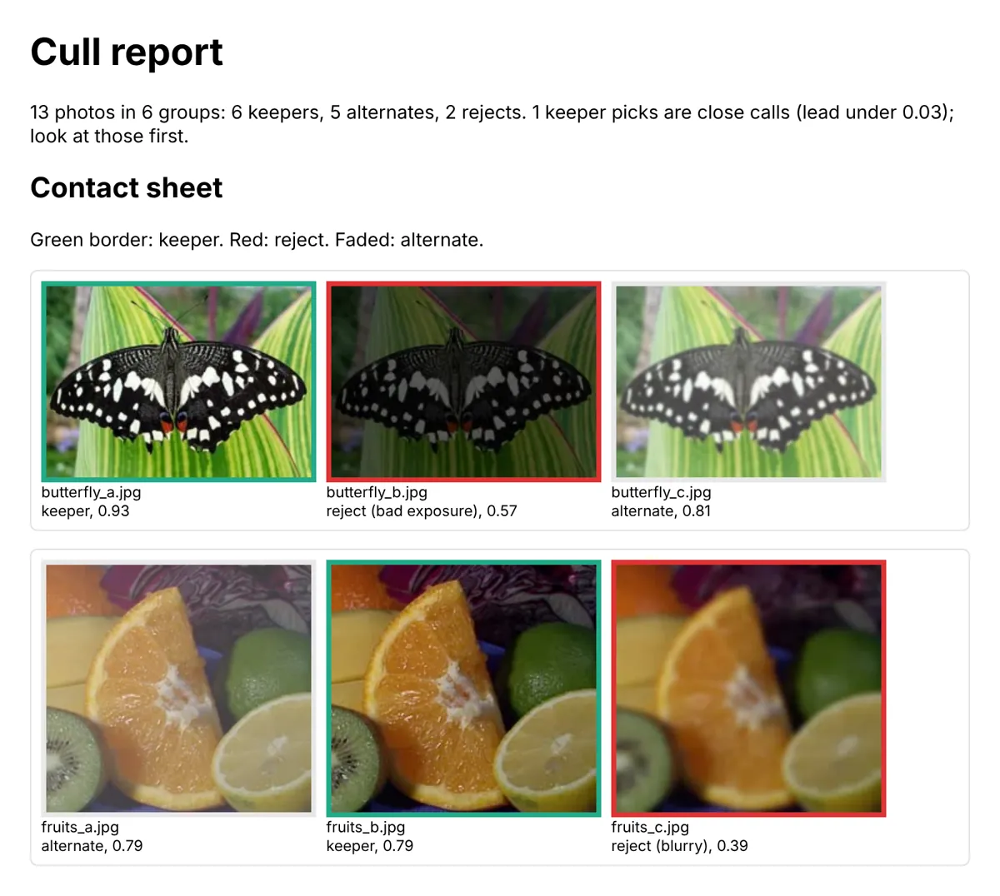

Cull, develop and grade a shoot overnight, on your own Mac.
ShootFlow copies your card with checksums, sets aside blurred and duplicate frames, develops camera raw files and renders graded reels, carousels and masters while you sleep. Nothing is uploaded and the card is never wiped.
12 raw formatsDNG, Canon, Sony, Nikon, Fujifilm and more, each checked on real files against LibRaw
Nothing uploadedRuns on your machine with Python and ffmpeg; no account, no cloud
Card never deletedEvery copy is verified by SHA-256 and listed in a manifest
What happens to a shoot
CopyCard to SSD, each file checked by SHA-256. Anything left behind is listed.
CullScores sharpness and exposure, groups bursts and keeps the best frame of each.
DevelopRaw sensor data to a neutral 16-bit master with the camera's colour.
GradeYour 3D LUT (.cube) on every master, in parallel ffmpeg jobs.
Deliver1080×1920 reels, 4:5 carousels and photo sets, plus review proxies.
One command runs all five; launchd can run it at 01:30 every night. A job that fails stops for a person and is listed for review instead of being guessed at.
What a cull report looks like
Two bursts from a real run of shootflow cull --thumbs. The original frame is kept in the first; the darkened copy is rejected for exposure and the softened one becomes an alternate. In the second, the blurred copy is rejected, and the keeper is a slightly reframed copy that tied the original at 0.79, so the report marks it a close call to check by eye.

The full run was 13 frames made from five OpenCV sample photos (Apache-2.0) by blurring, darkening or reframing them, so every right answer is known. Two of its 13 calls fall short: a copy at 30% brightness was kept as an alternate instead of rejected, and a 4% reframe was split into its own group. tools/cull_showcase.py rebuilds this report; it has not been tested on a real wedding or event shoot.
What exists today
Cull a folder offline
Scores every still for sharpness and exposure, groups near-identical burst frames (including ones the camera panned or zoomed a few percent between), keeps the best of each group and flags blurred or badly exposed frames. It writes an HTML report and, with --write-xmp, Lightroom and Bridge ratings (keeper 4 stars, alternate 2, reject −1).
Not yet measured on a real wedding or event shoot. Pass --picks FILE with the frames you would keep to see how often its keeper matched yours.
Develop raw without Lightroom
shootflow develop IMG_0001.dng writes a neutral 16-bit TIFF master: as-shot white balance, the camera's colour matrix and its .dcp profile, sRGB. Bayer files are demosaiced along their edges when numpy is installed.
Sensor values equal LibRaw's on real files from Nikon, Canon, Olympus, Lumix, Leica and Fujifilm bodies; 9–78% less false colour than bilinear on five real frames.
Grade and render overnight
Each proxy, grade and render is its own ffmpeg process, using the Mac's hardware encoders (VideoToolbox) for H.264 and ProRes. Reruns skip finished work and existing outputs are never overwritten.
Tested on synthetic media and small sets, not yet on a full real shoot or 4K camera footage.
Grade only the picks
--grade-scope selected gives full-resolution masters only to the clips and photos that reach a reel, carousel or photo set; the rest get a graded proxy and a note on how to make a full master later.
On 12 synthetic 1080p clips and three 24 MP photos the whole run went from 214 s to 129 s with the same deliverables.
What you get in the shoot folder
Folder
Contents
proxies/
Review proxies: photos up to 1024 px, H.264 video up to 960 px
graded/
Full-resolution masters with your LUT: ProRes 422 HQ for .MOV, high-bitrate H.264 for .MP4, 16-bit TIFF for developed raw files
deliverables/instagram_reel.mp4
1080×1920 H.264 reels cut from the selected clips (up to 4 s each, 90 s in total, no audio)
deliverables/instagram_carousel/
1080×1350 (4:5) JPEGs, and the same for instagram_photo_set/
Camera raw files it reads
DNG
CR3
CR2
CRW
ARW
NEF
RAF
ORF
RW2
RWL
PEF
SRW
MRW
3FR
Canon, Sony, Nikon, Fujifilm (X-Trans and compressed included), Olympus and OM System, Panasonic Lumix, Leica, Pentax, Samsung, Minolta, Kodak DCS Pro, Phase One and Hasselblad, each checked on real camera files against LibRaw. The card copy also takes 27 raw formats, HEIF stills, MXF and M2TS video and XMP sidecars; a format with no reader is culled from its embedded preview and asks to be converted to DNG before grading. Which cameras were checked, and what is still refused.
Measured, and not yet
Checked
Raw decoding against LibRaw on real files from dozens of bodies.
Closed eyes, with an optional face model you download: 6 of 6 closed-eye photos flagged and 0 of 99 others, on 105 real CC0 photos labelled by an agent, not a photographer.
The card copy left none of 71 public camera raw files behind.
Not yet
No app and no installed command: run it as PYTHONPATH=src python3 -m shootflow.cli.
No full real shoot through the overnight pipeline, and no photographer's picks to score the culling against.
Which shot wins is technical (sharpness, exposure, framing), not taste. The scene and look stages are stand-ins.
Run it yourself
Needs Python 3.10+ and ffmpeg (brew install ffmpeg). From a clone of the repository:
git clone https://github.com/Duncan-Haywood/oss-monorepo
cd oss-monorepo/ventures/photo-editing
# 1. Copy the card with checksums (never deletes the card)
PYTHONPATH=src python3 -m shootflow.cli execute-ingest \
--source /Volumes/EOS_DIGITAL --destination /Volumes/SSD/shoots \
--shoot-date 2026-10-18 --shoot-slug wedding --confirm
# 2. Optional: your look as a 3D LUT
cp MyLook.cube /Volumes/SSD/shoots/2026-10-18_wedding/color/shoot_look.cube
# 3. Run every stage (or write-launchd-plist to run it nightly)
PYTHONPATH=src python3 -m shootflow.cli run-local-pipeline \
--ingest-manifest /Volumes/SSD/shoots/2026-10-18_wedding/ingest_manifest.json \
--max-concurrency 3
Just culling: PYTHONPATH=src python3 -m shootflow.cli cull FOLDER --out REPORT. The README in that folder has every option.
Questions
Does ShootFlow delete or change the photos on my memory card?
No. Ingest copies with checksums and writes a manifest, and the source media is never deleted. Keep your own backups regardless: this is early-stage software.
How do I cull a folder of photos offline?
Run PYTHONPATH=src python3 -m shootflow.cli cull FOLDER --out REPORT. It scores each still for sharpness and exposure, groups near-identical burst frames, keeps the best of each group and flags blurred or badly exposed frames as rejects. Your photos are only read, and nothing is uploaded.
Can it write Lightroom or Bridge ratings?
Yes, with --write-xmp it writes sidecar files: keeper 4 stars, alternate 2, reject -1.
Can it develop raw files without Lightroom?
Yes. develop turns DNG, Canon CR3, CR2 and CRW, Sony ARW, Nikon NEF, Fujifilm RAF, Olympus ORF, Panasonic RW2, Leica RWL, Pentax PEF, Samsung SRW, Minolta MRW and Hasselblad 3FR files into neutral 16-bit TIFF masters. Formats other than DNG and 3FR need the camera's .dcp profile. Other formats can go through Adobe's free DNG Converter first.
Does it render video or grade images yet?
Yes, through local ffmpeg: graded masters, review proxies, reels and carousels, with your LUT. It has been tested on synthetic media and small sets, not yet on a full real shoot, and there is no app yet. Treat it as a tested core.
Has the culling been tested on real shoots?
Not yet on a real wedding or event shoot. Pass --picks FILE with the frames you would keep and the report shows how often its keeper matched yours, so you can check it against your own taste first.
Privacy and usage
This page has no scripts, cookies or analytics, and records nothing about you. The tool runs on your own machine and sends nothing anywhere.
Disclaimer
Early-stage software. Keep your own backups of all media; do not use it as the only copy of anything.
No warranty. This software is provided free and as-is, without warranty of any kind, express or implied. You are responsible for reviewing and verifying its output before relying on it. To the maximum extent permitted by law, the authors accept no liability for any loss or damage arising from its use.